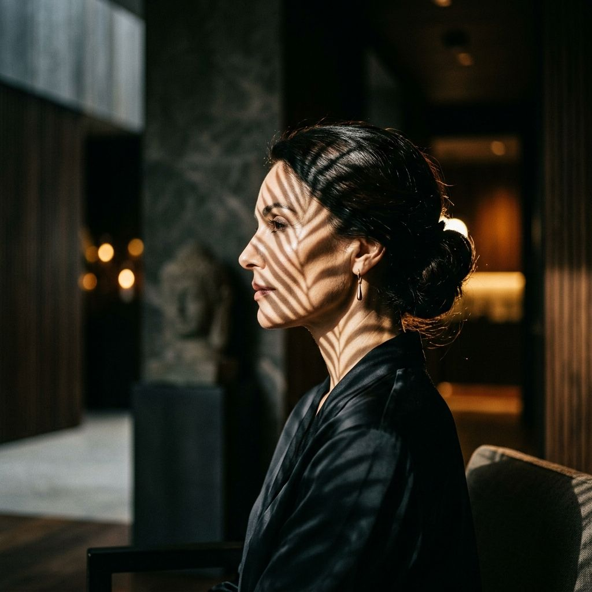
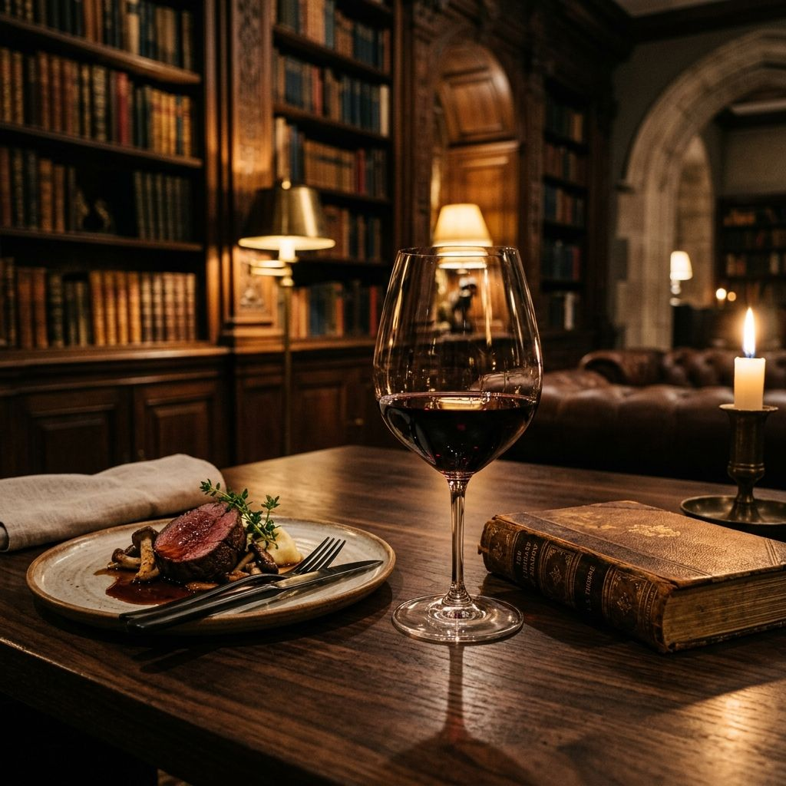

Releituras de Projetos com Foco em Diagramação World Class, Tipografia Editorial e Movimento Fluido.

Uma transformação total da identidade visual, utilizando grids assimétricos e tipografia Bodoni massiva para criar uma experiência de revista digital.

A "Biblioteca do Sabor" redesenhada com foco em atmosfera, scroll horizontal cinematográfico e um tema Dark Wood profundo.
Elementos que quebram o grid padrão para guiar o olhar do usuário e criar interesse contínuo.
A fonte deixa de ser apenas texto e passa a ser o esqueleto visual do site, ditando o ritmo.
Uso de GSAP e Lenis para garantir que cada transição seja suave, intencional e premium.